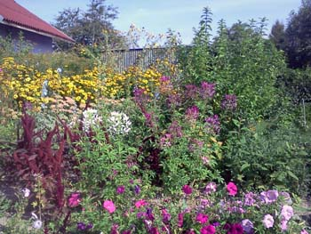

⇐
Wyżej to część sadu po wykarczowaniu setek samosiejek. A tak wyglądało to samo miejsce po dwóch latach.
Oczywiście od początku moim marzeniem było obsadzić tę wielką powierzchnię jakimikolwiek roślinami. Ideałem były rabatki pełne jaskrawo kwitnących bylin. Nie ważne jakich, byle zapełniały puste miejsce, i żeby się rozrastały, bo inaczej zjedzą je chwasty. A główne - by nasadzenia chociaż trochę przypominały te z czasopism.
Po trzech latach udało mi się część ogrodu uporządkować w taki sposób:
Po paru latach wszystko zaczęło się rozrastać, chwasty rosły w ukryciu, ale trudno było nazwać ten busz przemyślanym nasadzeniem. Nie byłam pewna, że chcę takiego właśnie ogrodu.

Tak wyglądało podwórko. Widać ciężarówkę, jaka niemal codziennie, przez tydzień, przyjeżdzała po żelastwo zalegające wszędzie. Udało się nawet wyciągnąć z pomocą ciągnika sporą część starego traktora, wrośniętego już w ziemię.
Po dwóch latach to miejsce wyglądało już tak:
Tu jest najtrudniej, ponieważ całe podwórko zasypane jest tonami kamieni i hutniczego żużlu. Sadzenie polegało na żmudnym wykopywaniu kilofem wielkich kamieni, następnie wygrzebaniu dziury, zasypaniu jej obornikiem z ziemią i podlaniu. Podlanie mało dawało, bo kamieniste podłoże przepuszczało każdą ilość wody.
Pierwsza wiosna. Dzięki Ryszardowi, naszemu przyjacielowi, już w maju mieliśmy w tym miejscu taką ścieżkę!

W tym miejscu nie było ziemi, tylko kamienie i żużel, więc nawet często podlewana trawa żółkła i łysiała.

Rosły tu tylko najwytrwalsze rośliny. Ale i one nie rozwijały się i słabo kwitły. A przesadzone w inną część ogrodu, pieknie się rozwijały.

Podstawowych prac ogrodniczych nauczyły mnie babcie, ale było to w dzieciństwie i dotyczyło uprawy warzyw na wiejskim zagonie. Babcie miały co prawda ładne ogródki przy domu, i ja się nimi też zachwycałam, ale zajmowanie się nimi byłoby ostatnim zajęciem, na jakie miałam czas i ochotę.
Nie znałam nazw roślin ozdobnych, nie wiedziałam czym się różnią byliny od dwuletnich, co to sukulenty i jak uprawiać ziemię, by coś w niej rosło.
Skoro jednak los zesłał mi spory kawał urodzajnej ziemi, to nawet jeśli nie miałam pomysłu, co z tym zrobić, nie mogłam też nie zrobić nic.
Postanowiłam założyć ogród. To znaczy obsadzić wszystko czymkolwiek. Część roślin otrzymałam w darze, część wykopałam w przydrożnym rowie, ale sporo też kupiłam. Były to przeważnie najtańsze krzewy, z dyskontów. Wsadzałam je w każde wolne miejsce, nie mając pojęcia o ich wymogach, ani o tym, jakie będą za rok-dwa. Powtarzał się więc ceremoniał przesadzania coraz to większych roślin. Pomagał mi w tym mój mąż Lucjan. Wyglądało to tak:
- Lucjanku - mówię słodko - jeśli będziesz miał wolną chwilkę, to podejdź do mnie, bo musimy przesadzić berberys.
Lucjan cierpliwie wykopał dół, nasypał tam obornik, potem starannie wykopał berberys i przesadził go.
I tak przez trzy wiosny.
W końcu, kiedy znów poprosiłam o przesadzenie rośliny (ale nie był to już ten sam berberys!), usłyszałam, jak cichutko pod nosem zamruczał:
- K..wa, dziesiąty raz przesadzam te berberysy.
Tak właśnie było. Wszystko co jakiś czas zmieniało miejsce, sporo roślin się zmarnowało, bo nie odpowiadały im warunki. Inne zagłuszyły chwasty, o części zapomniałam, a po latach okazało się, że wyrosły na dorodne krzewy.
Inspiracje czerpałam z niezliczonych pisemek ogrodniczych. Za każdym razem zachwycałam się innym nasadzeniem, ale też zdobywałam elementarną wiedzę o roślinach.
Gościom podobał się mój ogródek, bo był w wiejskim stylu, cieszył oko jaskrawymi barwami i koił zapachami.
Taki ogród, pozornie zostawiony samemu sobie i pielęgnowany z rzadka, wymagał w rzeczywistości mnóstwa pracy, czasu i nakładów. Skutek był taki sam: wszystkiego było za dużo, za gęsto, za wysoko, za szeroko. Nie potrafiłam tego okiełznać. A bardzo chciałam. I nie chodziło tu o plewienie i przycinanie. Ten ogród nie miał żadnego stylu. Był żaden. Ja chciałam, żeby był jakiś. Żeby rośliny miały swoje nazwy, żebym wiedziała, czego ode mnie oczekują, dlaczego nie chcą rosnać, i co trzeba zrobić, żeby były piękne i oryginalne. Marzyłam o ogrodzie, jaki zaskoczy.
Zrozumiałam, że trzeba się tego po prostu nauczyć!
Tu jest o tej nauce.